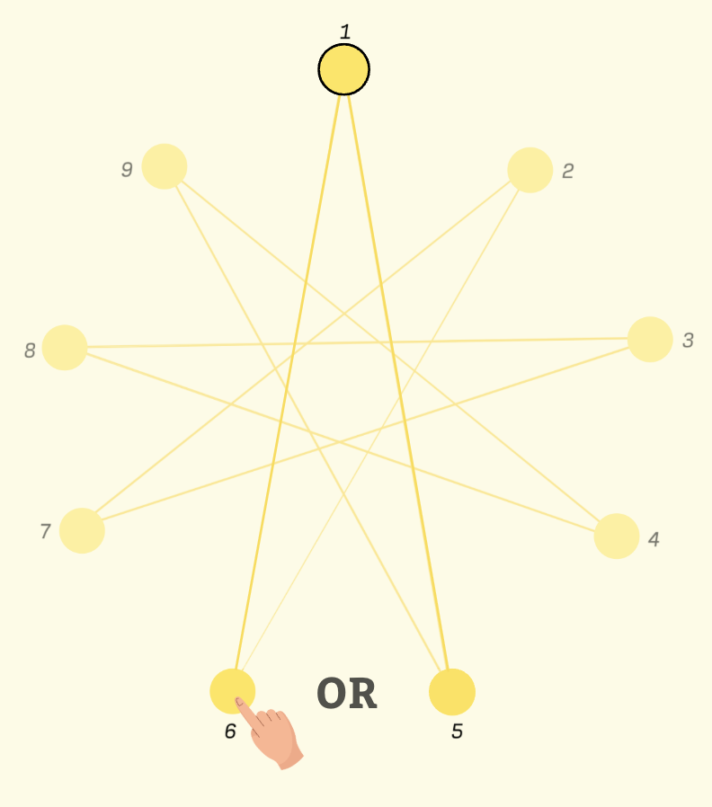
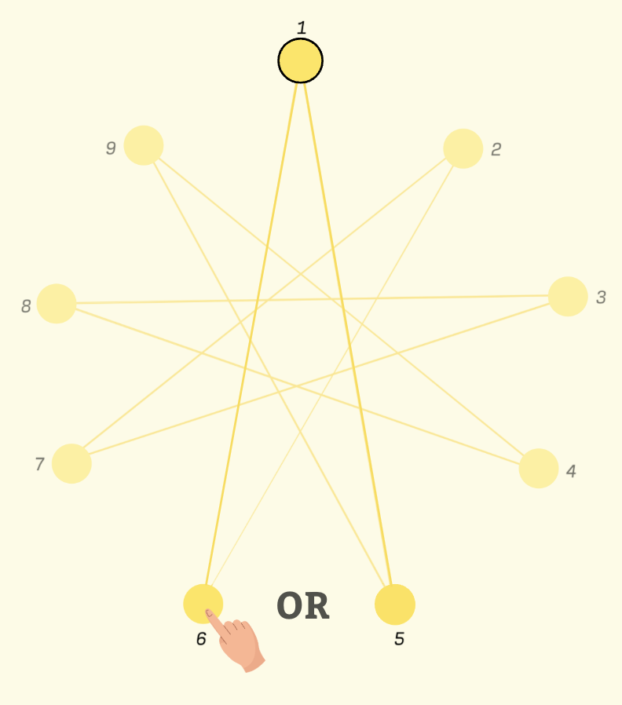
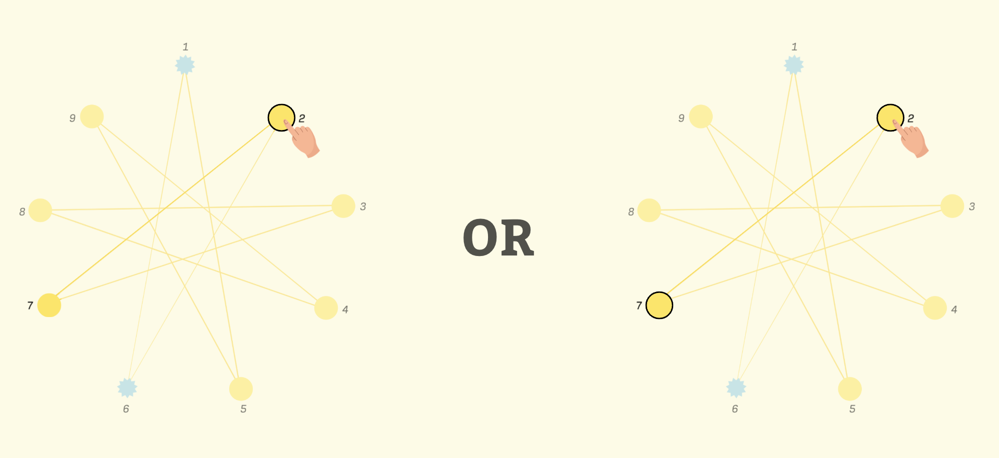
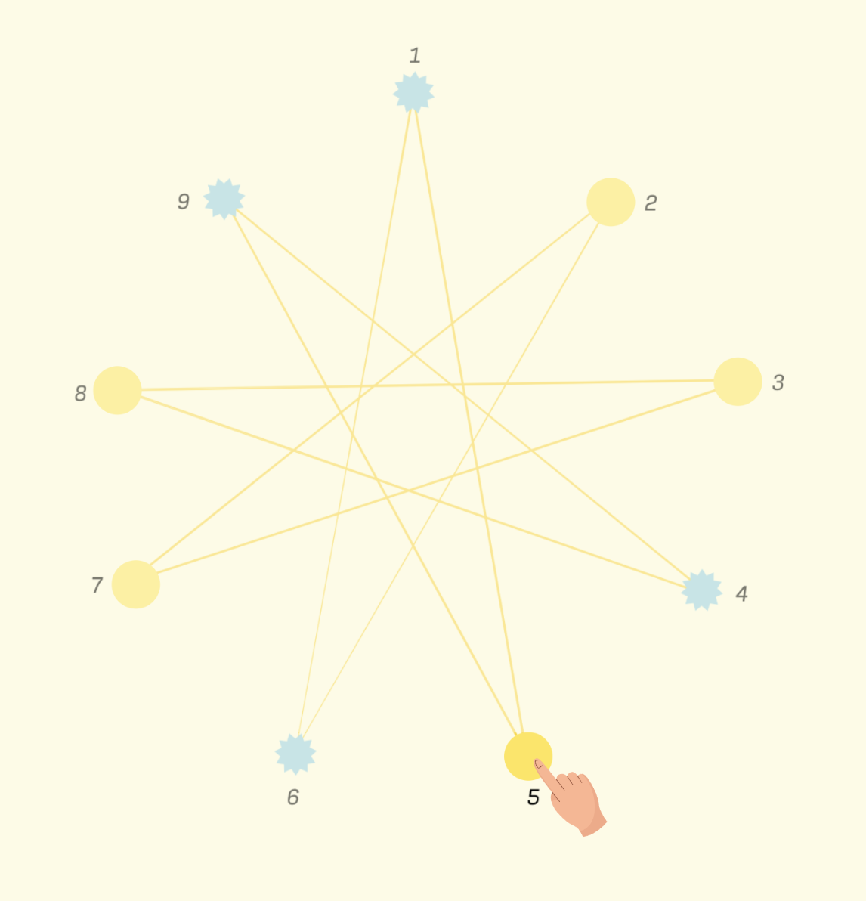
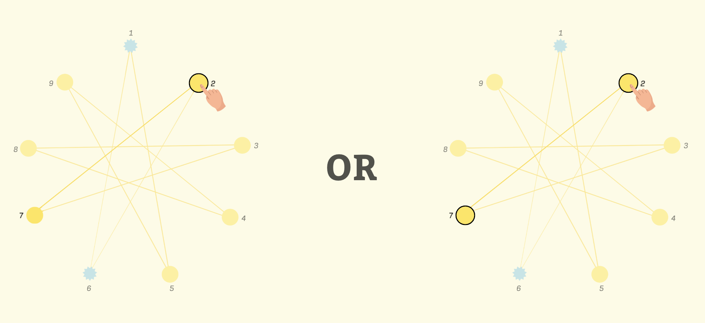
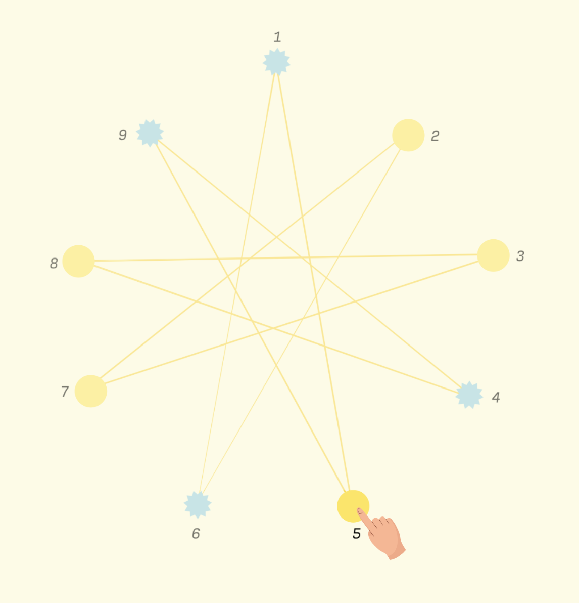

Game Rules
Welcome to Star Nim, a variant of the classic combinatorial game 'Nim'. A player's action each turn is simply removing a token from the board
by selecting it and then clicking it.
 The objective of this game is to be the last person to remove a token.
It is often the case that some tokens are 'connected' to the selected token by a line.
The objective of this game is to be the last person to remove a token.
It is often the case that some tokens are 'connected' to the selected token by a line.
 If there are two such tokens, you'll need to first select one of the two

and then click either of the selected tokens once more to remove both.
If there are two such tokens, you'll need to first select one of the two

and then click either of the selected tokens once more to remove both.
 If there is only one token connected to the selected one (i.e. one connected token has already been removed),

clicking on the selected token automatically removes its partner.

If there are none connected to the selected token,
it is still possible to remove the token on its own but – of course – it will not remove any other tokens along with it.
If there is only one token connected to the selected one (i.e. one connected token has already been removed),

clicking on the selected token automatically removes its partner.

If there are none connected to the selected token,
it is still possible to remove the token on its own but – of course – it will not remove any other tokens along with it.
 Play continues in this way until there are no tokens left on the board.
As previously mentioned, the first person to remove all of the tokens wins. It is not necessary that only one token can be removed to win.
Play continues in this way until there are no tokens left on the board.
As previously mentioned, the first person to remove all of the tokens wins. It is not necessary that only one token can be removed to win.
 Enjoy!
Enjoy!